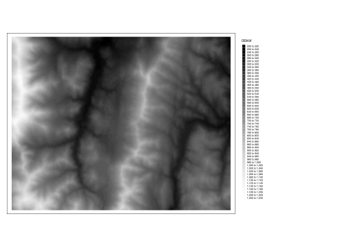

In this session we use the WhiteboxTools (WBT) a modern and advanced geospatial package, tools collection, which contains ~450 functions. The WBT has an interface to r and python.
Raster data are represented by a matrix of pixels (cells) with values. Raster is used for data which display continuous information across an area which cannot be easily divided into vector features. For the purpose of watershed delineation the raster input of Digital Elevation Model is used.
3.3 Watershed delineation
The process of delineation is the first step in basin description. One simply has to delineate the domain
The step-by-step process involves:
acquiring digital elevation model of area
pit and sink removal
flow accumulation calculation
flow direction calculation
outlet identification
delineation towards specified outlet
Let’s start with whitebox package that contains an API to the WhiteboxTools executable binary.
We need to reference path to the executable
Except for the whitebox package, some other packages for general work with spatial data are necessary. The packages terra and sf are needed for working with the raster and vector data. They also provide access to PROJ, GEOS and GDAL which are open source libraries that handle projections, format standards and provide geoscientific calculations. And the package tmap makes plotting both raster and vector layers very easy.
3.4 Watershed delineation workflow
Code
library(whitebox)library(terra)## terra 1.7.55library(sf)## Linking to GEOS 3.11.0, GDAL 3.5.3, PROJ 9.1.0; sf_use_s2() is TRUElibrary(tmap)## Breaking News: tmap 3.x is retiring. Please test v4, e.g. with## remotes::install_github('r-tmap/tmap')whitebox::wbt_init(exe_path ="~/Downloads/WBT/whitebox_tools")whitebox::check_whitebox_binary()## [1] TRUE
1
Load the Whitebox API package
2
Load the terra package for raster use
3
Load the sf package for vector use
4
Load the tmap plotting functions for layers
5
Whitebox needs the information where the data executable is stored
6
Binary check of functionality
3.4.0.1 Sample data
Code
dem <-rast(whitebox::sample_dem_data())tm_layout(legend.outside =TRUE) +tm_shape(dem) +tm_raster(palette ="-Greys", n =50)
1
Use the rast() function to load the data
2
Plot via the tmap workflow

3.4.0.2 DEM workflow
The digital elevation model has to be adjusted for the watershed delineation algorithm to be able to run successfully.
We have the raster prepared for the delineation, now we need to provide a point layer with the gauge, to which the watershed should be delineated. The point has to be placed at the stream network. We will create the layer from scratch.
Under the term river morphology we understand the description of the shape of river channels. Hydrologists use indices such as stream length, Strahler order